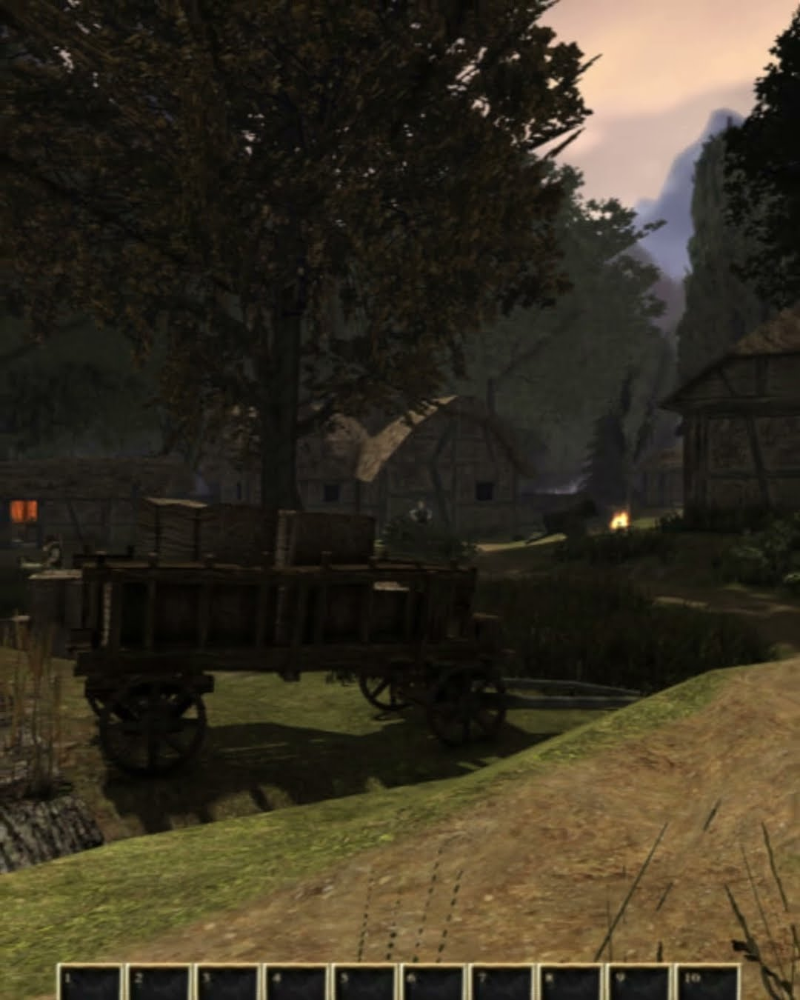
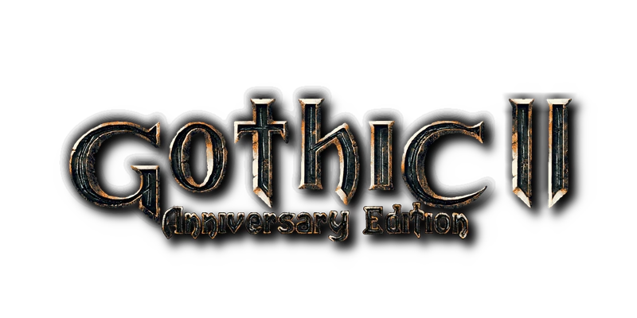
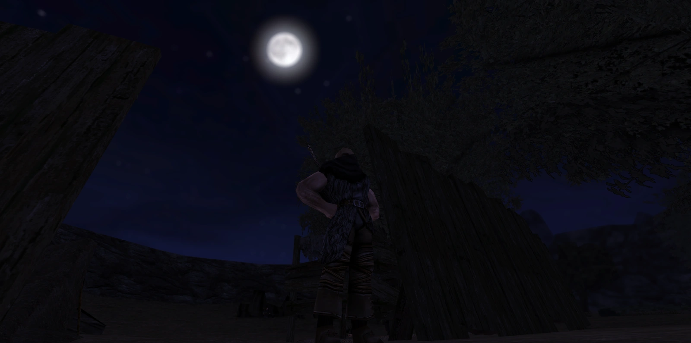
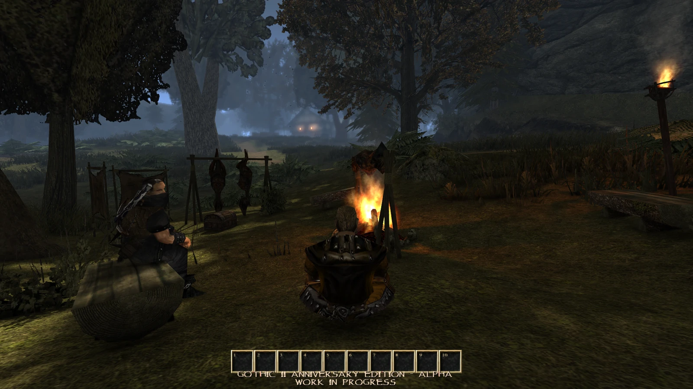

Die YouTube-Version des neuesten Bigfarm-Showcases!


ÜBERSICHT
Die Anniversary Edition ist eine umfangreiche Fan-Erweiterung und Overhaul-Mod für Gothic II: Die Nacht des Raben. Sie erweitert und überarbeitet die Hauptgeschichte ebenso wie alte und neue Nebenhandlungen, führt neue Gilden und Wege ein, vergrößert die Welt um neue Areale und Bewohner – und verleiht dem Spiel einen eigenen Artstyle, der auf Gothic I, der Gothic-I-Alpha, dem Gothic Sequel und der Gothic-II-Alpha aufbaut. Auch nach der Veröffentlichung sind weitere Updates geplant, die die Geschichte ausbauen und die Welt-Meshes weiter überarbeiten.
Die erste Release-Version von Lobarts Farm wird finalisiert. Dazu experimentieren wir mit neuer Vegetation – wie immer W.I.P.: Die Farben des Grases können sich noch leicht ändern.
Als Inspiration diente dieses fantastische Artwork – mir gefallen besonders das Licht und die Atmosphäre (Credits gehen an Martin Nawaz!).
Wie kürzlich angekündigt bin ich der Empfehlung gefolgt und habe einen Patreon eröffnet, auf dem ich ausführlichere Entwicklungs-Updates teile, Umfragen erstelle und Meinungen einhole – oder unterstützt uns über Ko-Fi!
Hinweis: Es gibt KEINE weiteren Vorteile dabei. Das Projekt soll nichtkommerziell bleiben – keine „exklusiven“ Pre-Release-Builds o. Ä. Patreon und Ko-Fi sind schlicht Wege, dieses und zukünftige Projekte zu unterstützen; fast alles Geld (und mein eigenes) fließt ohnehin in die Mod. Jede Unterstützung – finanziell oder nicht – wird sehr geschätzt!
Wir arbeiten weiter an der ersten spielbaren Version – hoffentlich noch dieses Jahr, wenn es klappt.
11 neue Screenshots
„Du siehst aus wie ein Flüchtling. Alle Flüchtlinge wollen in die Stadt …“

Ein wenig am Wegesrand relaxen …

Ein weiterer Tag, ein weiteres Update zur laufenden Feinabstimmung des Vobbings der Spielwelt. Alles wie immer W.I.P.
Riesiger Dank geht an Snowfox für die zusätzlichen, fantastischen Beiträge in Sachen Spacering und Ideen!
Der 27. März ist da und damit dürft ihr diesmal, wie versprochen, euren eigenen Weg wählen!
Außerdem hat das 25th-Anniversary-Video Untertitel erhalten (vorerst auf Deutsch, Englisch, Polnisch und Russisch – wobei die letzten beiden maschinell übersetzt sind, also hoffentlich passend)!
Geht einfach zurück zum 25th-Anniversary-Video und springt ans Ende, um zu wählen!
(Sicherheitshalber und der Einfachheit halber verlinke ich alle Videos trotzdem unten.)
Morgen, am 15. März um 20:00 Uhr CET / 19:00 Uhr UTC, feiern wir gemeinsam 25 Jahre seit der ersten Veröffentlichung von GOTHIC™. Da der Release wie angekündigt verschoben werden musste, können wir an diesem Tag leider nur einen Trailer zeigen – aber es kommt noch viel mehr: Am 27. März könnt ihr das Video erneut besuchen und zwischen dem Weg des Soldaten des Königs und Onars Söldner wählen – inklusive einer kleinen Quest.
Die AE erscheint trotz der Verschiebung weiterhin 2026! Wir hoffen, sie gefällt euch!
Hier kann später der finale Download, ein GitHub-Release oder ein externer Download-Link eingetragen werden.
DOWNLOADDer Download ist noch nicht verfügbar.